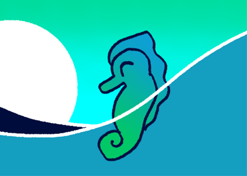
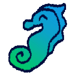

The Latin name for seahorse is Hippocampus which means "Horse Caterpillar"

Seahorses are fish. They live in water, breath through gills and have a swim bladder. However they do not have caudal fins and have a long snake-like tail. They also have a neck and a snout that points down.
Seahorses have excellent eyesight and their eyes are able to work independently on either side of their head. This means they can look forwards and backwards at the same time! This is particularly useful as they hunt for food by sight.
Seahorses have long thin snouts enabling them to probe into nooks and crannies for food. When they find food they suck it up through their snouts like a vacuum cleaner. Their snouts can expand if their prey is larger than the snout. They are not able to chew and have to disintegrate the food as they eat it.
Seahorses eat small crustacea such as Mysis Shrimp. An adult eats 30-50 times a day. Seahorse fry (baby seahorses) eat a staggering 3000 pieces of food per day.
Seahorses have a prehensile tail. This allows them to grip onto eelgrass and other weeds and prevents them from being washed away by strong currents and waves.
Seahorses can change colour very quickly and match any surroundings in which it finds itself. They have even been known to turn bright red to match floating debris.
Both males and females also change colour during their courtship display.
Unlike most other fish, seahorses have an exoskeleton. Their bodies are made up of hard, external, bony plates that are fused together with a fleshy covering. They do not have scales.